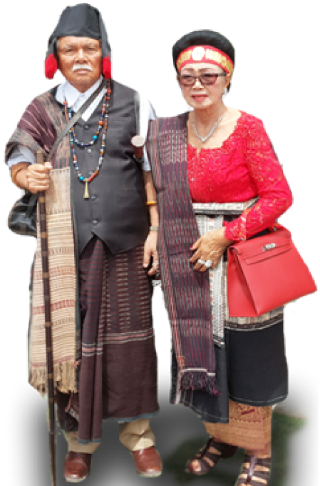

PT. HUTAHAEAN PABRIK TAPIOKA
Jl. Indorayon, Desa Pintubosi, Kec. Laguboti, Kab. Toba, SUMUT, 22381

Sejarah PT. Hutahaean
Dalam proses penanaman ubi tersebut OPPUNG berpikir kalau ubi ini sudah panen akan dikemanakan. Kemudian tanpa pikir panjang OPPUNG memutuskan untuk membangun Pabrik Tapioka untuk menampung pemasaran dari pada ubi tersebut. Maka pada tahun 2009 dimulailah pekerjaan membangun pabrik tapioka di Desa Pintubosi sambil menunggu ubi panen.

Profil Pemilik
Pemilik PT.Hutahaean Pabrik Tapioka adalah Bapak St.Harangan Wilmar Hutahaean yang dikenal dengan nama panggilan Bapak Hutahaean atau OPPUNG.